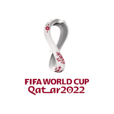

 جام جهانی فوتبال 2022 قطر از 30 ابان الی 27 آذر 1401 در شهر دوحه کشور قطر برگزار می گردد. جام جهانی فوتبال 2022 قطر با شرکت تیم های مختلف جهانی برگزار می گردد و این اولین بار است که در خاورمیانه بازی های جام جهانی برگزار می گردد. مسابقات مابین ماههای ژوئن و ژوئیه سال 2022 مابین 48 تیم که خود شامل تیم میزبان است برگزار خواهدشد. فیفا در شرایطی به میزبانی قطر رای داد که آمریکا، کره جنوبی، ژاپن و استرالیا هم برای میزبانی جام جهانی فوتبال اعلام آمادگی کرده بودند. جدیترین رقیب قطر برای میزبانی مسابقات استرالیا بود و همگان تا دقایق آخر باتوجه به وسعت کم قطر و شرایط نامطلوب آب و هوایی شانس استرالیا برای میزبانی را بیشتر میدانستند اما قطر با توجه به قدرت و نفوذی که داشت توانست این امتیاز را برای خود کسب کند و موفق شود امتیاز جام جهانی را بگیرد. مشکلاتی نیز وجود دارد که یکی از این مشکلات بدی آب و هواست. دولت قطر تعهد داده تا بهترین امکانات را به کار گیرد تا هوا معتدل گردد و فضا برای بازی ها مناسب باشد و دما از 43 درجه به 19 درجه برسد. تیم ملی قطر نیز در این بازی های شرکت می کند و تا به حال این تیم در جام جهانی حضور نداشته است. تحقیقات نشان می دهد که این کشور حدود 17 میلیارد و 200 میلیون هزینه کرده تا بتواند این عنوان را بدست آورد. برخی از رسانه ها از سایر هزینه های پنهانی برای کسب این عنوان پرده برداشتند و افشا گری نمودند. قطر برای این که بازی ها در شرایط بهتری برگزار گردد شهری به نام لوسیل افتتاح نموده است تا در فضایی رویایی و مجلل مراسم افتتاحیه و اختتامیه را برگزار نماید جام جهانی فوتبال 2022 قطر یک رویداد است